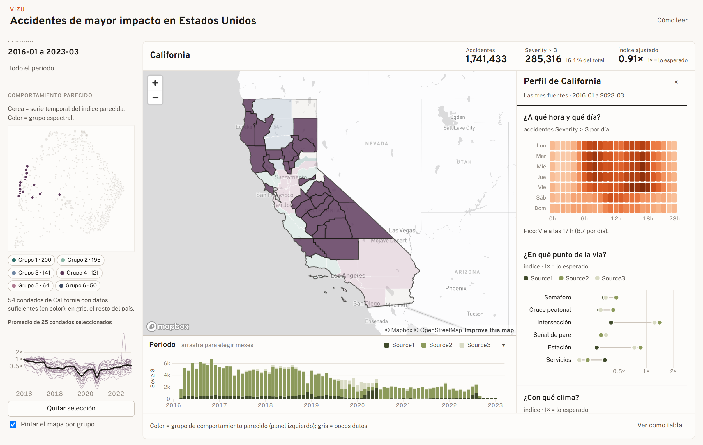

Introducción / Contexto
Analistas, periodistas y vecinos usan datos abiertos para preguntar dónde y cuándo se concentran los accidentes graves. US Accidents [1, 2] es el mayor de EE. UU.: 7 728 394 accidentes entre 2016 y 2023, con lugar, hora, clima, elementos de la vía y una severidad de 1 a 4.
La severidad mide el impacto en el tráfico (no las lesiones). Llamamos de alto impacto a Severity ≥ 3: 1 504 047 casos (19,46 %).
Problema de investigación
Los registros vienen de tres proveedores que no etiquetan la severidad igual: Source2 marca como alto impacto el 34 % de sus reportes y Source1 solo el 8 %; además, Source1 pasó de 33,4 % (2018) a 2,4 % (2021).
Como cada estado tiene una mezcla distinta de proveedores, un mapa del porcentaje bruto premia o castiga a cada lugar según quién lo reporta, no según lo que pasa en sus calles.
Objetivos
Objetivo general: mostrar dónde y cuándo se concentran los accidentes de alto impacto sin confundir el efecto del lugar con el del proveedor.
Objetivos específicos (tareas T1–T5):
- T1 Ubicar áreas y periodos de concentración, y ver cómo cambian por proveedor.
- T2 Caracterizar el clima de los casos de alto impacto.
- T3 Describir su patrón por hora y día de la semana.
- T4 Identificar los elementos de la vía asociados.
- T5 Comparar dos áreas con mezcla de proveedores parecida.
Acrónimos
Sev ≥ 3: accidente de alto impacto en el tráfico ● O/E: observados ÷ esperados ● k-NN: grafo de k vecinos más cercanos ● T1–T5: tareas de análisis ● DC: Distrito de Columbia ● A/B: comparación de dos áreas fijadas
Limitaciones
- El índice es relativo, no un riesgo: no hay datos de volumen de tráfico.
- Los grupos dependen de k, del suavizado y del salto espectral.
Datos
Un script en Python (pandas) lee los 7,7 M de filas en unos dos minutos y escribe conteos mensuales exactos por proveedor y área en cuatro niveles (país, estado, condado, ciudad), además de conteos por clima, elemento de la vía y día × hora.
Para la capa de vías, los accidentes se cuentan en celdas de ≈ 200 m por año. Salida: 6 129 archivos JSON (103 MB) que cuadran con los totales originales.
Metodología
El flujo de la franja superior sigue la numeración (1)–(6) en tres fases: índice ajustado, exploración enlazada y comportamiento parecido.
1Datos. US Accidents con su proveedor, año, lugar y severidad.
2Agregados mensuales. Conteos exactos por área, proveedor y mes: así el índice se recalcula en el navegador para cualquier periodo elegido.
3Índice ajustado (estandarización indirecta).
n: reportes del área por proveedor s y año y; r: tasa nacional de alto impacto de ese proveedor ese año. 1× = lo esperado; 2× = el doble. Con E < 30 el área sale en gris.
| Estado | % bruto | Índice | Puesto |
|---|---|---|---|
| Arkansas | 15,4 % | 2,26× | 37 → 2 |
| Nebraska | 16,4 % | 0,53× | 32 → 47 |
Mismo porcentaje bruto, índice opuesto: Arkansas lo reporta casi solo Source1 (estricto) y Nebraska, Source2.
4Exploración enlazada. Mapa del país a la calle, brush mensual que actualiza todo al arrastrar, perfiles de hora × día, clima y vía (un punto por proveedor) y comparación A/B.
5Series y grafo. Serie trimestral de O/E por área (29 trimestres), suavizada hacia 1, en logaritmo y normalizada; se comparan por correlación en un grafo k-NN (k = 6 estados, 12 condados) [9].
6Proyección espectral. Los vectores propios 2 y 3 del laplaciano dan la posición en el scatter [7]; k-means sobre los primeros da los grupos, según el mayor salto espectral [8]: 3 grupos de estados y 6 de condados.
Diseño visual
- Una sola pantalla que nunca cambia de vista, inspirada en TripVista [4].
- Mapa: escala naranja secuencial de 0,5× a 2× con 1× al centro; a nivel de condado, vías coloreadas por accidentes, como JamVis [5].
- Perfiles: un punto por proveedor, para ver si ambos coinciden.
Resultados

- El ajuste reordena estados: Arkansas pasa del puesto 37 al 2.
- El clima se sostiene en ambos proveedores: nieve o hielo 1,20× y 1,31×; lluvia 1,07× y 1,17×.
- La vía no: el semáforo da 1,10× en Source1 pero 0,27× en Source2.
- Pico: viernes a las 16 h.
Insights: VIZU en uso
El confinamiento triplicó la gravedad en Illinois
Cómo: elegir el estado y arrastrar el brush sobre cada semestre.
Mar.–ago. 2020: Illinois 1,34× → 3,66× y Nueva Jersey 1,05× → 2,75×. Menos tráfico, más velocidad y menos control.
Respaldo: [11, 12, 13]
Menos choques, pero más graves
Cómo: comparar abr.–jun. 2019 con abr.–jun. 2020 en el brush.
Los accidentes bajaron entre 22 % y 42 %, y el índice subió en los cuatro estados.
Respaldo: [11, 14]
Georgia: gravedad alta y en aumento
Cómo: índice año por año y grupo en el scatter espectral.
Siempre sobre lo esperado, de 1,75× (2017) a 2,16× (2022); los heridos graves subieron 35 % en 2018–2022.
Respaldo: [15]
Referencias
- [1] S. Moosavi. US Accidents (2016–2023). Kaggle, 2023. CC BY-NC-SA 4.0.
- [2] S. Moosavi et al. A countrywide traffic accident dataset. arXiv:1906.05409, 2019.
- [3] X. Fan et al. Big data analytics and visualization with spatio-temporal correlations for traffic accidents. ICA3PP, 2015.
- [4] H. Guo et al. TripVista: Triple perspective visual trajectory analytics. IEEE PacificVis, 2011.
- [5] E. Rodriguez, N. Ferreira, J. Poco. JamVis: Exploration and visualization of traffic jams. EPJ ST, 2022.
- [6] T. Munzner. Visualization Analysis and Design. CRC Press, 2014.
- [7] M. Belkin, P. Niyogi. Laplacian eigenmaps. Neural Computation, 2003.
- [8] A. Ng, M. Jordan, Y. Weiss. On spectral clustering. NeurIPS, 2002.
- [9] L. Zelnik-Manor, P. Perona. Self-tuning spectral clustering. NeurIPS, 2004.
- [10] M. Bostock, V. Ogievetsky, J. Heer. D³: Data-driven documents. IEEE TVCG, 2011.
- [11] J. Hughes, D. Kaffine, L. Kaffine. Highway crashes in California during the COVID-19 pandemic. Springer, 2022.
- [12] Northwestern Univ. Transportation Center. Crash data in Chicago during the pandemic, 2020.
- [13] Office of the Attorney General of New Jersey. Traffic fatalities 2020, 2021.
- [14] AAA Foundation for Traffic Safety. Traffic fatalities during the COVID-19 pandemic, 2021.
- [15] Georgia Governor’s Office of Highway Safety. Overview of motor vehicle crashes in 2022, 2024.